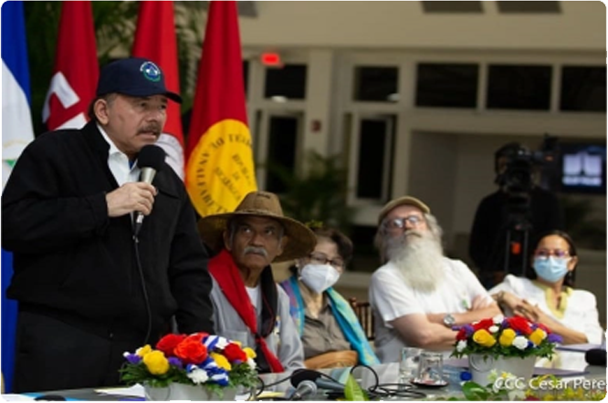

Daniel Ortega inventó un "tío abuelo obispo" para atacar con virulencia a la Iglesia
Su hermano Humberto Ortega lo desmiente: Marco Antonio Ortega no era un obispo "cómplice", sino el abuelo que abogó por su padre Daniel Ortega en 1934
25
OEA · Enrique Bolaños Geyer · represión · elecciones nacionales · 25 aniversario · EEUU · Ley Renacer
Su hermano Humberto Ortega lo desmiente: Marco Antonio Ortega no era un obispo "cómplice", sino el abuelo que abogó por su padre Daniel Ortega en 1934
Régimen generaliza 90 días de "investigacíon" para opositores que acusan de "traición a la patria"; ambos precandidatos continúan incomunicados
El Consejo Permanente aprueba resolución por amplia mayoría; únicamente cinco países miembros se abstuvieron y tres votaron en contra
Fiscalía y Policía usan "Ley de Soberanía" para detener a opositores, y los encarcela por noventa días con el pretexto de "investigarlos"
Expresidente costarricense Rafael Calderón destaca histórica resolución de cancilleres de la OEA que condenó a la dictadura de Somoza en junio de 1979